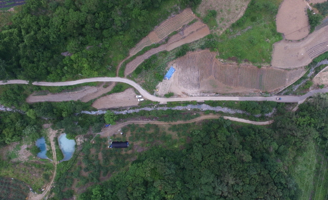
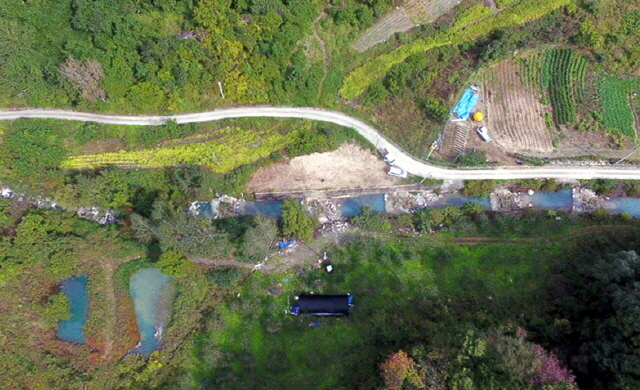

사업목적 :폐광산 침출수 유입 저감 시설 설치를 통한 회산천의 건강한 수생태계로의 회귀 및 광해방지사업의 초석마련
사업목적 :폐광산 침출수 유입 저감 시설 설치를 통한 회산천의 건강한 수생태계로의 회귀 및 광해방지사업의 초석마련- 사업기간 :2016. 6. ~ 2016. 12
- 위 치 :충북 단양군 단성면 회산리 218번지 일원
- 사업내용 :월류보 7개소, 수질정화 식물(달뿌리 풀) 박스 63개
-

사업 전
-

사업 후
봉양폐광산 계류 생태 복원사업
사업목적 :폐광산 침출수 유입 저감 시설 설치를 통한 회산천의 건강한 수생태계로의 회귀 및 광해방지사업의 초석마련 사업기간 :2016. 6. ~ 2016. 12 위 치 :충북 단양군 단성면 회산리 218번지 일원 사업내용 :월류보 7개소, 수질정화 식물(달뿌리 풀) 박스 63개사업 전
사업 후